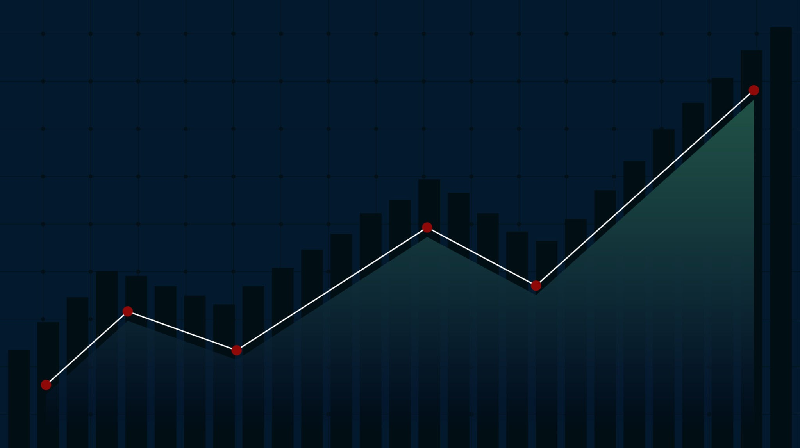

Book a call
Cascades
Human Capital Management
Why Cascades
Capabilities
Four capabilities, one method
People
Workforce transformation and fractional HR leadership
Intelligence
AI adoption, data, and organizational intelligence
Infrastructure
Technology, processes, and operating models
Experience
Brand, design, and digital experience
Methodology
How we work
The Ascend Framework™
Four stages, one ascent
Service delivery lifecycle
Six steps, every engagement
Products
Fixed-scope entry points
AI People Solutions Index
Free · 8 questions · 2 minutes
Executive Growth Accelerator
Leadership team · 90 minutes
The People Infrastructure Gap
Free executive checklist · 25 checkpoints
Organizational Diagnostic
Organization-wide · full engagement
Executive Search
Retained search for senior appointments
Connect
Business transformation advisory
Transform how you operate,
work, scale, and show up.
See the capabilities →
Our conviction
Performance is designed.
Not left to chance.
Why Cascades →

The Ascend Framework™
Assess. Build.
Validate. Sustain.
Read the methodology →
01 / 03